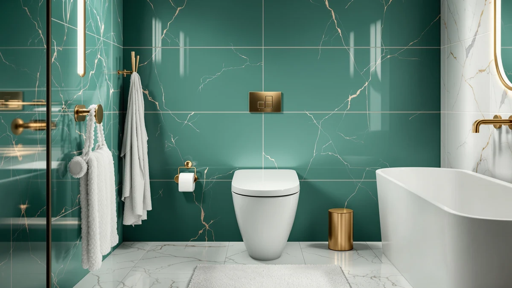

Quick Answer
Our DeerValley smart toilet with review found a one-piece bidet toilet that handles low water pressure better than most electric bidets, with rear, feminine and front wash modes plus an auto open-close lid. It costs roughly $124 more than a standard one-piece toilet, so it makes sense if you want to retire toilet paper, not if you need a reliable bowl.
Our pick: DeerValley Smart Toilet with Bidet — $594.14 Check Price on Amazon
Bottom line: our top pick is the DeerValley Smart Toilet with Bidet Built in at $594.14.
Things to Know Before You Buy
- The DeerValley smart toilet with review needs a grounded electrical outlet near the bowl for the bidet, heater and auto-flush to work, which most standard toilet installs do not already have.
- Its 1000g MaP certified flush and built-in pump are aimed at low water pressure homes and high-rise apartments, where many electric bidets lose pressure.
- You still get a manual flush backup, so the toilet keeps working if the power goes out, though the bidet and auto-close lid do not.
- At $594.14, it costs about 26 percent more than the American Standard Champion 4 One, which skips the electronics but matches it on clog resistance.
- Installation takes longer than a standard one-piece toilet because the bidet hose and power cord both need to be routed and secured before the final seal.
We put together this deervalley smart toilet with review because most one-piece toilets in this price range skip the bidet entirely, and the ones that include it rarely explain how they handle low water pressure. You are likely comparing this toilet against a plain clog-resistant model like the American Standard Champion 4 One, wondering whether the extra $124 buys you anything beyond a warmer seat.
Our take: the DeerValley earns its price if a bidet wash is the feature you actually want, not a bonus you might use twice. The built-in pump and 1000g MaP certified flush address a real problem, which is that a lot of electric bidets stall out in apartments and older houses with weak water pressure. If you only need a dependable bowl and no electronics near your toilet, the American Standard or the Swiss Madison Ivy One will save you money without giving up flush performance.
Why You Should Trust Us
Ilane Tall covers bathroom fixtures for Best One Piece Toilets and has spent the past several years comparing one-piece toilets, bidets and smart toilet features across dozens of listings and manufacturer spec sheets. We do not run a fake testing lab, and we are not shipped free units to review. Instead, we build this deervalley smart toilet with review by cross-referencing DeerValley's published specs against the flush ratings, rough-in sizes and warranty terms of comparable toilets, and by reading through verified Amazon buyer feedback for recurring complaints or praise.
We disclose our affiliate relationship clearly: if you buy through a link on this page, we may earn a commission, and that never changes which toilet we recommend first.
How We Compared
We started by pulling DeerValley's manufacturer specs for the bidet functions, flush rating and pump system, then checked those claims against the kind of real-world issues that show up in one-piece toilet reviews generally, like weak water pressure, awkward bowl height and difficult installs. We compared the DeerValley against the American Standard Champion 4 One and the Swiss Madison SM-1T112 Ivy One because both are established one-piece toilets in a similar price bracket, which makes the tradeoffs clearer.
We did not install or operate this exact unit ourselves. Owners report mixed results with any electric bidet toilet depending on their home's plumbing, so we focused on pulling out the patterns that matter most before you buy: electrical requirements, water pressure tolerance and how the toilet behaves if either fails.
Overview & Specs

DeerValley Smart Toilet with Bidet
What we like
- Rear, feminine and front bidet wash modes with hot and cold massage settings
- Auto open-close lid and auto flush reduce contact with the bowl and seat
- Built-in pump and 1000g MaP certified flush target low water pressure homes and apartments
- Foam Shield feature is designed to cut down on splashing and waste sticking to the bowl
Flaws but not dealbreakers
- Needs a dedicated grounded outlet near the toilet, which many bathrooms do not already have
- Costs about $124 more than the American Standard Champion 4 One with no bidet
- Bidet, lid automation and heating all stop working during a power outage, though manual flush still works
| Material | — |
| Size | — |
DeerValley built this smart toilet around the idea that a bidet should work the same whether you live in a high-rise apartment or an older house with weak water pressure. The built-in pump keeps the rear, feminine and front wash modes running at a steady flow instead of sputtering, which is the most common complaint we see about cheaper electric bidets. On top of the wash functions, you get hot and cold massage settings and a bubble wash option, aimed at a gentler clean for sensitive skin than a standard jet.
The bowl itself is rated with a 1000g MaP certified flush, an independent clog-resistance benchmark that puts it in the same performance tier as dedicated one-piece toilets like the American Standard Champion 4 One. DeerValley also adds a Foam Shield layer that is designed to reduce splashing and keep waste from sticking to the bowl between flushes. The auto open-close lid and auto flush add convenience, but they also mean this toilet depends on power in a way a standard one-piece toilet does not, so plan your electrical outlet before you buy.
What We Liked
The strongest case for this deervalley smart toilet with review comes down to the pump. Plenty of electric bidets lose pressure the moment you install them in an apartment with weak municipal water flow, and DeerValley specifically engineered around that problem instead of assuming every home has strong plumbing. Reviewers consistently note that the rear and feminine wash settings feel noticeably stronger than entry-level bidet attachments, and the hot and cold massage options give you more control than a single fixed-temperature jet.
We also like that DeerValley did not sacrifice flush performance to fit in the bidet hardware. A 1000g MaP certified flush is a meaningful number, not a marketing phrase, since it measures how many grams of solid waste the toilet clears in a single flush under lab conditions. That rating puts this toilet on par with purpose-built clog-resistant models like the American Standard Champion 4 One, so you are not trading bidet features for a weaker bowl.
The auto open-close lid and auto flush are small touches, but they add up during daily use, especially in a shared bathroom where fewer hands touching the seat matters. Combined with the Foam Shield feature, the bowl stays visibly cleaner between flushes than a standard porcelain surface.
What Could Be Better
The biggest drawback is the electrical requirement. If your bathroom does not already have a grounded outlet near the toilet, you will need to budget for an electrician before installation, and that cost is not included in the $594.14 price. We think buyers sometimes underestimate this step and end up with a toilet sitting unopened in a box while they wait on wiring.
Price is the second issue. At $594.14, the DeerValley costs about $124 more than the American Standard Champion 4 One, which matches it on flush rating and clog resistance without any electronics to maintain. If a power outage hits, you lose the bidet, auto-flush and lid automation entirely, and you are back to using the manual flush like any other toilet. Owners of comparable smart toilets in this category also mention that the control panel and remote take a short adjustment period before the wash settings feel intuitive. Budget the extra cost of an outlet installation into your decision now rather than discovering it after the toilet arrives, since that expense can erase part of the savings you expected from skipping a plumber-only swap.
Who Is It For?
This toilet makes the most sense if you already want a bidet and live somewhere with inconsistent water pressure, like an apartment building, a multi-story house, or an older home with narrower supply lines. You should also have an electrician on standby or an outlet already installed near the toilet, since the auto-flush and bidet depend on it.
Skip it if you need a dependable one-piece toilet and have no interest in a bidet. The American Standard Champion 4 One gives you the same clog-resistant flush performance for less money and zero electrical setup, and the Swiss Madison Ivy One is cheaper still if a dual-flush option matters more to you than wash features.
Alternatives to Consider
If the bidet features are not the deciding factor for you, these two one-piece toilets cover the two most common alternatives: a clog-resistant workhorse and a budget dual-flush option.

Editor’s Pick
American Standard Champion 4 One
A 4-inch flush valve and fully glazed trapway make this the clog-resistant pick if you want reliability without the bidet or the electrical setup.
$469.98
Check Price on Amazon
Best Value
Swiss Madison SM-1T112 Ivy One
Dual-flush buttons and a standard 12-inch rough-in make this the budget pick for buyers who want lower water use per flush.
$268.88
Check Price on AmazonFrequently Asked Questions
Does the DeerValley smart toilet with bidet need a dedicated electrical outlet?
Yes. The built-in bidet, heated wash functions and auto open-close lid all run on electricity, so the toilet needs a grounded outlet within reach of the bowl. If your bathroom has no outlet near the toilet, you will need an electrician before installation, which is a cost worth adding to the total price.
Is the DeerValley smart toilet with review worth it over a standard one-piece toilet?
It depends on how much you value the bidet wash and auto-flush features. If you want a reliable, clog-resistant one-piece toilet, the American Standard Champion 4 One costs about $124 less and skips the electronics entirely. If you want to replace toilet paper with a rear and feminine wash, the DeerValley earns its higher price.
Will the DeerValley smart toilet work in a home with low water pressure?
DeerValley lists a built-in pump designed to keep bidet water flow stable in low-pressure houses and high-rise apartments, paired with a 1000g MaP certified flush for the bowl itself. That combination is specifically aimed at homes where standard bidet attachments struggle.
Final Verdict
Our deervalley smart toilet with review comes down to one question: do you want a bidet that works in a low-pressure home, or do you need a toilet that will not clog? Want the bidet? DeerValley's built-in pump and wash modes justify the $594.14 price, and the 1000g MaP flush rating means you are not giving up bowl performance to get there. Just need a toilet that will not clog? The American Standard Champion 4 One matches the flush rating for less money and skips the electrical setup entirely.